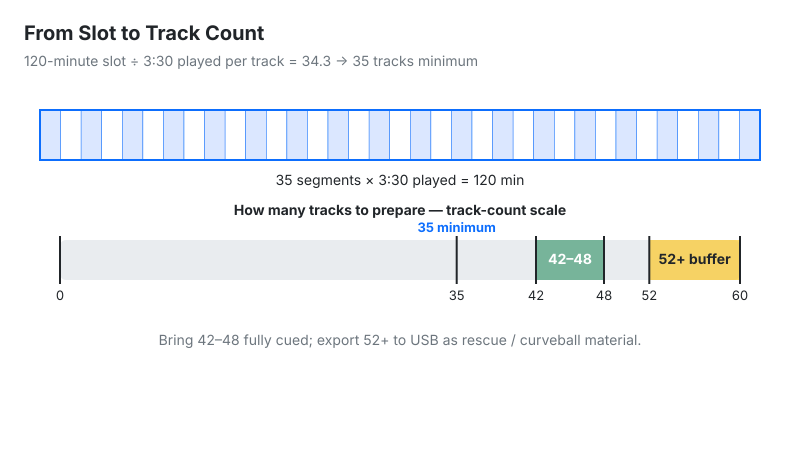
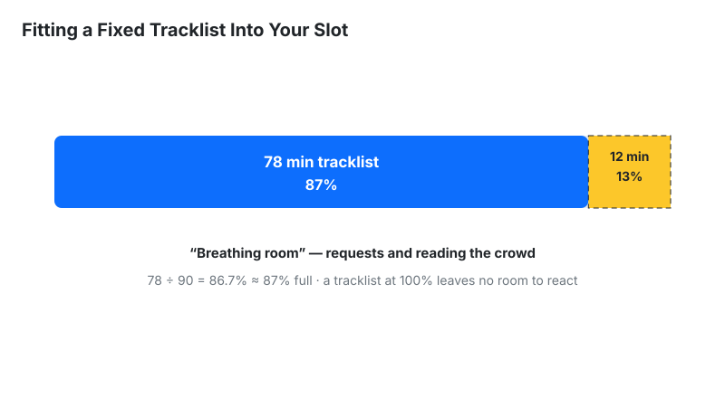

Calculate how many tracks you need for your DJ set, or determine the total duration of your
prepared playlist. Optimize your set planning for clubs, festivals, radio shows, or private
events.
hoursmin
:
:
Tracks Needed
14 tracks
Minimum Tracks: 14
Recommended: 16-19
With Buffer: 20+
Tracks/Hour: 13.3
How to Use the DJ Set Length Calculator
Mode 1 (Calculate Tracks Needed): Enter your scheduled set length in Hours
and Minutes (or click any quick preset like 1 hour or 2 hours),
then input your typical Average Track Length (e.g., 4:30). The calculator
instantly returns your minimum tracks, a recommended pool with a 20–40% cushion, the full buffer
count (+50%), and your pacing rate in tracks per hour.
Mode 2 (Calculate Set Duration): Enter the total number of prepared tracks in your
playlist along with their average length. The tool projects the total playtime in hours and
minutes.
Important: enter the played portion (cue point to fade), not the file
length. This calculator has no separate overlap control — blend minutes are already inside the
played portion you type.
DJ Set Length Calculator: Tracks for Any Set
Last updated: October 12, 2026 · Written by the Pitch Detectors Editorial Team
A DJ set length calculator converts your slot length into a track count — or a tracklist into total playtime. Enter your set time and average played minutes per track; it divides the minutes to give minimum tracks, a 20–40% recommended pool, and a +50% buffer count. Measure the played portion (cue point to fade), not the file length: a "4:30" file you play for 3:00 advances the clock 3 minutes, not 4:30.
Key Takeaways
Tracks needed = set minutes ÷ average played minutes per track. Played minutes (cue point to fade) decide the count, not file length.
This calculator has no overlap input. Blend minutes live inside the played portion you enter — measure from the moment a track takes over the mix to the moment the next track takes over.
Recommended pool = minimum × 1.2–1.4; buffer count = minimum × 1.5. The widget shows all three tiers, updated live.
Quick-cut genres need 2–3× more tracks per hour than long-blend genres. Techno runs 12–16/hr; hip-hop runs 24–32/hr.
Reverse mode turns a fixed tracklist into total playtime — aim to fill 85–90% of your slot, never 100%.
What Is a DJ Set Length Calculator?
Definition: A DJ set length calculator converts between set duration and track count. Given your slot length and average played time per track, it computes how many tracks to prepare; given a tracklist, it computes total playtime. It works on played minutes — the clock time each track occupies — so blending is already accounted for in the number you enter.
Running out of music mid-set is a rite of passage nobody wants twice. The math looks trivial until you measure honestly: a "2-hour set" with 4:30 tracks is not 27 tracks — enter a 3:30 played portion and the same slot needs 35. This calculator does that arithmetic in both directions: time → tracks and tracks → time.
How This Calculator Works
Two modes cover both planning directions. Set-length mode: enter hours and minutes plus your average played length (minutes:seconds), and it returns the track count. Track-count mode: enter how many tracks you have and their average played length, and it returns total playtime in hours and minutes. There is no separate overlap control — blended minutes live inside the played portion you type.
Methodology:tracks needed = set minutes ÷ average played minutes (rounded up); recommended pool = tracks × 1.2 to × 1.4; buffer count = tracks × 1.5; set duration = track count × average played minutes. We verified the widget against hand calculations on five sample inputs (60 ÷ 4.5 = 13.3 → 14 tracks; 120 ÷ 3.5 = 34.3 → 35; 15 × 4 = 60 min; 90 ÷ 2.5 = 36; 45 ÷ 3 = 15) — every result matched exactly.
Set Length Formulas and Worked Example
Tracks needed = set minutes ÷ average played minutes per track (round up)
Recommended pool = tracks needed × 1.2 to × 1.4
Buffer count = tracks needed × 1.5
Set duration = track count × average played minutes
Tracks per hour = 60 ÷ average played minutes
Worked example: a 2-hour (120 min) set, with a 3:30 played portion per track:
Buffer count: 34.3 × 1.5 = 51.4 → 52+ tracks on the USB
Pacing: 60 ÷ 3.5 = 17.1 tracks per hour
The classic mistake: entering the 4:30 file length gives 120 ÷ 4.5 = 27 tracks — and you run out ~25 minutes early (27 × 3.5 = 94.5 min)

From slot to track count: 120 minutes at a 3:30 played portion needs 35 tracks minimum
How to Use This Calculator
Choose a mode: set length → tracks, or track count → duration.
Enter your slot in hours and minutes (e.g. 2 hours, 0 min), or tap a quick preset.
Enter average track length as minutes:seconds — your played portion (cue point to fade), not the file length (see below).
Read three numbers: minimum tracks, the recommended pool (20–40% extra), and the buffer count (+50%).
In track-count mode, enter how many tracks are in your crate and their average played length to get total playtime.
Export the buffer count to USB, not the minimum.
Planning the transitions themselves? Use the DJ Transition Calculator to time your blends in bars and seconds.
Reading Your Result
Readout
Meaning
Next step
Minimum tracks
Tracks to fill the slot exactly
Multiply by 1.2–1.4 for your working pool
Recommended
Working pool with 20–40% headroom
Prepare this many, fully cued
With buffer
Full crate at +50%
Export this many to USB
Tracks/hour
Your pacing rate
Compare against your genre's row in the table below
Set duration (reverse mode)
Playtime of your fixed tracklist
If it overshoots the slot, shorten played portions or cut tracks
Played Portion vs. File Length: The Number Everyone Gets Wrong
Your files say 4:30. You play 2:45 of each — intro, main section, out before the outro. Always enter the played portion: cue point to fade, the minutes a track actually occupies your clock. For most club genres that is 60–70% of the file length; for radio edits and quick-cut hip-hop it drops under 50%.
Overlap lives inside this number. The minutes where two tracks play at once belong to neither track's played portion alone — so measure from the moment a track takes over the mix to the moment the next track takes over. One correction changes everything: a 120-minute set at 4:30 file length suggests 27 tracks, but at a 2:45 played portion you need 44 (120 ÷ 2.75 = 43.6 → 44). DJs who plan on file length chronically underprepare; plan on played portion and the math matches the night.
Tracks Per Hour by Genre
Pacing is genre DNA. Check the widget's tracks/hour readout against this table — if your techno set shows 30 tracks an hour, your played portion is too short for the style:
Genre
Typical played portion
Overlap style
Tracks/hour
Techno / deep house
4–6 min
Long blends (1–2 min)
12–16
House / tech-house
3–4 min
Medium blends (~1 min)
16–20
Open-format / pop
2–3 min
Quick cuts (~30 sec)
20–28
Hip-hop / R&B
1.5–2.5 min
Quick cuts, drops
24–32
Drum & bass
2–3 min
Double drops (~45 sec)
22–28
Trance
4–5 min
Long blends (1–2 min)
12–15
The Safety Buffer Rule: What 20–40–50 Means
Never bring exactly what the math says. The widget's three tiers exist for a reason: the minimum fills the slot; the recommended pool (20–40% more) covers requests and direction changes; the buffer count (+50%) covers overruns and dead gear. Requests, a dead dancefloor, an MC segment, technical hiccups — the night deviates from the plan.
For a 2-hour set needing 35 tracks: prepare 42–48 fully cued and export 52+ to USB. Organize the extras so they are reachable mid-set — a "rescue" folder of proven floor-fillers and a "curveball" folder for direction changes. The buffer costs nothing (it is the same USB stick) and has saved more sets than any mixing trick. Promoters remember the DJ who handled the 30-minute overrun gracefully, not the one who looped the last track.
Reverse Mode: Fitting a Fixed Tracklist Into a Slot
Sometimes the tracklist is fixed — a themed set, a label showcase, a competition routine — and the question flips: does it fit? Enter your track count and average played length in reverse mode. If the total overshoots your slot, two levers fix it: shorten played portions (tighter cuts) or cut tracks (the honest one).
A useful target: keep the tracklist at 85–90% of the slot. The remaining 10–15% is breathing room for crowd-reading — the difference between a rigid playlist and a live set.

Reverse mode: fitting a fixed tracklist into your slot with room to breathe
Limitations
Averages hide variance. A 7-minute epic plus a 90-second edit averages 4:15 but plays nothing like it — outliers skew the count.
One number covers every track. Real played portions vary track to track; the calculator uses a single average for all of them.
Crowd-reading isn't math. The calculator plans capacity, not programming — energy arc and track selection stay human work.
Talking, requests, and gear issues consume clock time the formula can't see; the buffer tiers exist for exactly this.
Set Length Planning vs Alternatives
Method
Accuracy
Use when
This calculator
Exact math on your estimates
Planning any set with known pacing
Timed rehearsal
Exact (for that run)
Competition routines and recorded mixes
Rule of thumb (~20/hr)
Rough
Back-of-napkin estimates only
Playlist duration sum
Overstates — ignores blending
Never for planning — it counts every overlap twice
For gig planning, the calculator beats rules of thumb; for recorded mixes, nothing beats a timed rehearsal. Use both: calculate first, rehearse the tricky transitions.
Frequently Asked Questions
27–35 tracks for most club styles. 120 minutes ÷ 4:30 played portion = 27; ÷ 3:30 = 35. Enter your own played portion — that single number moves the answer more than anything else. The widget then adds its tiers: a 20–40% recommended pool and a +50% buffer count.
Count the played portion — cue point to fade — typically 60–70% of the file length. Planning on full file length is the #1 cause of underprepared sets. Long-blend DJs play more of each track than quick-cut DJs, so be honest about your style when you estimate it.
Overlap is measured into your played portion — this calculator has no separate overlap control. Count the clock minutes from the moment a track takes over the mix to the moment the next track takes over. A 4:30 track with a 1-minute blend advances the set 3:30 — enter 3:30.
20–40% more than the minimum, with a +50% full buffer on the USB. Organize extras into "rescue" (proven floor-fillers) and "curveball" (direction-change) folders. Requests, overruns, and dead-floor moments eat into planning — the buffer separates professionals from DJs who loop their last track.
12–32, depending on genre. Techno and trance run 12–16 per hour with long blends; house does 16–20; open-format and hip-hop hit 20–32 with quick cuts. If the widget's tracks/hour readout looks wrong for your genre, your played-portion estimate is off — fix that first.
Cut duplicate energy moments first — tracks serving the same feeling, not just the same song. Then shorten played portions (tighter intros and outros). Keep the list at 85–90% of the slot; the rest is room to read the crowd.
Yes — and the buffer matters more. Weddings lose clock to speeches, first dances, and requests. Calculate the dancing portion separately from dinner and background music, use shorter played portions for open-format mixing, and bring the full +50% buffer. Requests alone redirect whole hours.
Divide the slot into thirds: warm-up (deeper, longer blends), peak (higher energy, quicker cuts), and cool-down or handover. Run the calculator per stage with stage-appropriate pacing — peak hour needs more tracks per hour than the warm-up. Program the arc, then let the crowd adjust it live.
Your +50% buffer already covers it — on a 2-hour set that is a full extra hour of music. Without the buffer: stretch played portions (let tracks breathe) and dip into your rescue folder. Never visibly panic; the crowd can't tell planned from improvised.
Yes — it is more accurate there, since streams have no requests or overruns. For recorded mixes, do one timed rehearsal of the tricky transitions and calculate the rest. Strict broadcast clocks reward reverse mode: trim the tracklist to 58 minutes, not 60 — the last 2 minutes belong to sweepers and stingers.